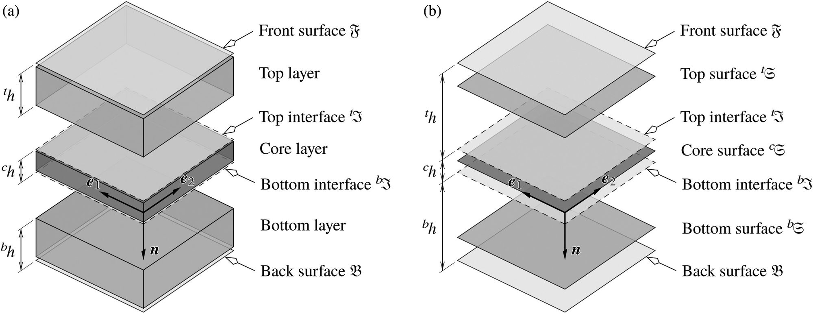

Anti-sandwich panels (PV modules)

On Thermal Strains and Residual Stresses in the Linear Theory of Anti-sandwiches
The current study aims to formulate the behaviour of anti-sandwiches that considers residual stresses and thermal strains by means of a layer-wise approach. To this end, the constitutive equations of classical linear elasticity are extended to form the Duhamel-Neumann equations. The direct approach is adopted to project the three-dimensional problem onto two-dimensional surfaces, i.e., each layer of the anti-sandwich is modelled as a single surface that represents the overall behaviour of the layer. The formulation of the problem begins with the decoupling of deformation into independent membrane, bending, twisting and transverse shear modes. The infinitesimal deformation measures are set up on the kinematics of the problem and related to the corresponding kinetic measures via the proposed stiffness relations. The resulting boundary value problem is converted into the equivalent weak form by means of a variational approach. The presented set of equations can be solved inexpensively using various computational approaches such as the finite element method.